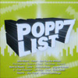
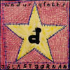
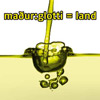
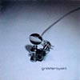
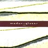

| 01/12 |
CD - Release |
 "Popplist 7"
A compilation with 19 bands/artists.
maður:glotti (my Faroese Duo) contributes with 1 song. |
| 01/12 |
Press |
Kultur Vesterbro Årsbog 2007/2008 |
| 01/12 |
Download - Release |
 "Jólastjørnan"
Christmas single.
maður:glotti (my Faroese Duo) |
| 20/09 |
Live |
Dennis Agerblad Band live, Warehouse 9, København. |
| 06/09 |
Performance |
Færøsk Transvestit, Co-Lab, Nørre Søgade 17, København |
| 28/08 |
Press |
CD Anmeldelse af albummet "land", Sosialurin, Færøerne. |
| 18/08 |
Press |
Masser af musik, Citadel Avisen, Danmark. |
| 11/08 |
Radio interview |
maður:glotti i Rockstovan, Útvarp Føroya, Radio på Færøerne. |
| 10/08 |
Press |
maður:glotti kommer i radioen, Sosialurin, Færøerne. |
| 09/08 |
Fashion Show |
Dennis Agerblad går model for
bARBARA i gONGINI Copenhagen Fashion Week. |
| 05/08 |
Press |
"Musclemanblað" í elektroniskum hami, Sosialurin, Færøerne. |
| 01/08 |
Press |
Selvportræt af Dennis Agerblad, Bolig Magazinet. Danmark. |
| 29/07 |
Free Download - Release |
 "Musclemanblað" "Musclemanblað"
Cover single with Dennis Agerblad. |
| 21/07 |
Press |
Føroya hava flutt seg nógv, Sosialurin, Færøerne. |
| 21/07 |
Press |
Manfólkaremuláta við kjólum og femininum streymi í, Dimmalætting, Færøerne. |
| 21/07 |
Press |
Torskiltur kultbólkur, Sosialurin, Færøerne. |
| 21/07 |
Press |
G! Mini: Minni, meir mergjað, metrosexuellari, Dimmalætting, Færøerne. |
| 19/07 |
Live |
Færøernes Første Dragshow, G! mini Festival, Grundin, Gøtu, Færøerne. |
| 19/07 |
Press |
Kalt á G! mini, Dimmalætting, Færøerne. |
| 18/07 |
Live |
My duo "maður:glotti" Live at "G! mini Festival", Gøtu, Færøerne. |
| 17/07 |
Musik Video |
"Spurningurin", maður:glotti |
| 17/07 |
CD - Release |
 "land"
Third album with
maður:glotti (my Faroese Duo) |
| 09/07 |
Press |
Vágapotalin, Færøerne. |
| 01/07 |
Download - Release |
 "Danske Dunst Shows" "Danske Dunst Shows"
First album with
Dennis Agerblad Band. |
| 12/06 |
DJ |
Dennis Agerblad & Bryn vender plader på Jolene, København, Denmark. |
| 23/05 |
Blog |
Jeg er også Dansker, Freddy Hagens Blog, Danmark. |
| 04/04 |
Live |
Dennis Agerblad Band på Camp X, Rialto Teateret, Frederiksberg, Denmark. |
| 09/03 |
Press |
Modkraft, Elektronisk tidskrift, Danmark. |
| 30/01 |
Exhibition |
Æggen, Trapholt, Denmark. |
| 15/12 |
Download - Release |
 "I Wanna Pose" "I Wanna Pose"
2 song single with
Dennis Agerblad & Minimal Martin. |
| 15/12 |
Live |
Broken Mirror Records Release Party, Warehouse9, Copenhagen |
| 21/11 |
Press |
Kult-kalender, Politikken, Copenhagen. |
| 10/11 |
Blog |
Rune Engelbreth Larsens Blog på Politikken, Copenhagen. |
| 08/11 |
Press |
Asmaa i Ekstrabladet, Copenhagen. |
| 23/10 |
Press |
Fancy Føroysk, Sosialurin Newspaper, Faroe Island. |
| 19/10 |
Exhibition |
Æggen, Nordatlantens Brygge, Copenhagen. |
| 15/09 |
Performance |
Dunst meets Sabaah, Råhuset, Copenhagen. |
| 24/08 |
Video
Marathon |
Løgne. A film by Dennis Agerblad. Copenhagen |
| 12/05 |
Live |
Broken Mirror Records Lounch Party, Warehouse 9, Copenhagen. |
| 15/12 |
Performance |
Rode Rage Røvhuls Pyramide Dunst Party, Copenhagen. |
| 15/11 |
Film |
CPH:DOX - Øjet I Natten, Copenhagen. |
| 03/11 |
Live |
Elektriske Hjerter i Flødesovs, Operaen, Christiania, Copenhagen. |
| 08/09 |
Video
Marathon |
Integration. A film by Dennis Agerblad. Copenhagen |
| 22/07 |
Performance |
CSD Party, Berlin. |
| 08/07 |
Film |
Shave Your Pet, Backstage, Dunst Party, Copenhagen. |
| 08/07 |
Live |
Shave Your Pet, Dunst Party, Copenhagen. |
| 03/07 |
Performance |
Queerfestival, Copenhagen. |
| 03/07 |
CD - Release |
 "Shave Your Pet" "Shave Your Pet"
A compilation with the dunst performance group.
Dennis Agerblad contributes with 1 song. |
| 17/06 |
Live |
La Extreme Circus, Almeria, Spain. |
| 10/06 |
Live |
CSD, Zürich, Switzerland. |
| 03/06 |
Live |
Half Mashine, Christiania, Copenhagen. |
| 31/05 |
Film |
Singing, Copenhagen. |
| 11/05 |
Live |
Smegma, Berghain, Berlin. |
| 05/05 |
Film |
Dancing at Lars Von Trier & Peter Ålbeks 50 years birtday Party at Zentropa, Copenhagen. |
| 05/05 |
Live |
Lars Von Trier & Peter Ålbeks 50 years birtday Party at Zentropa, Copenhagen. |
| 01/05 |
Press |
Dennis Agerblad in Pan Magazine, Copenhagen. |
| 28/04 |
Live |
Roze Wester Festival, Amsterdam. |
| 12/04 |
Performance |
DJ Boy George at Vega, Copenhagen. |
| 01/04 |
Performance |
Dunst Gender Bender Bingo, Copenhagen |
| 23/03 |
Performance |
Nat Film Festival, Copenhagen |
| 28/02 |
Radio |
Interview - P1, Danmarks Radio, Copenhagen. |
| 11/02 |
Live |
Release Party, Dunst CD: Odéur, Ungdomshuset, Copenhagen. |
| 15/01 |
Film |
Afterskiing, Centralhjørnet, Copenhagen. |
| 15/01 |
Performance |
Transer på Glatis, Kongens Nytorv, Copenhagen. |
| 01/12 |
Film |
Welcome to Dunst by Dennis, Delores & Petruska, Copenhagen. |
| 01/12 |
Film |
Fightclub by Dennis & Delores, Copenhagen. |
| 15/11 |
Film |
Dennis Agerblad in different moods, Copenhagen. |
| 25/10 |
Press |
Copenhagen Gay & Lesbian Film Festival |
| 07/10 |
Performance |
Dunst at Be Queer # 2a, Stubnitz, Dunkerque, France. |
| 08/10 |
Live |
Dunst at Be Queer # 2b, Stubnitz, Dunkerque, France. |
| 01/10 |
Press |
Homoer på tværs, OUT & ABOUT, Copenhagen. |
| 28/09 |
Video
Marathon |
Misundelse. A nominated film by Dennis Agerblad. Copenhagen |
| 09/09 |
Live |
Ondt i Røven, Amigobar, Copenhagen. |
| 03/09 |
Live |
Dunst Nakkeost, Zürich, Switzerland. |
| 13/08 |
Live |
Private Parts, Dunst Party, Copenhagen. |
| 02/07 |
|
Birtday Party, Copenhagen. |
| 11/06 |
Demo |
At the Ambassy of Polen, Copenhagen. |
| 30/05 |
Live |
Queeruption # 8, Barcelona. |
| 27/05 |
TV2 Lorry |
Dennis Agerblad with friends sings and talk about dunst in the program "BRUNCH", Copenhagen. |
| 05/05 |
Live |
Dunst at Be Queer # 1, Dunkerque, France |
| 17/03 |
CD - Release |
 "Odéur" "Odéur"
A compilation with the dunst performance group.
Dennis Agerblad contributes with 2 song. |
| 01/03 |
Music Video |
Midnight Lover |
| 12/02 |
Live |
Stille Aften med Dunst, Cabaret, Ungdomshuset, Copenhagen. |
| 31/12 |
Live |
Dunst Newyear Party at Homophobia, Kinzo Club, Berlin. |
| 18/12 |
Performance |
HR&FRU Dunst Party, a queer personality cuntest, Ungdomshuset, Copenhagen. |
| 26/11 |
Performance |
Dunst Spejder Fest (Boy Scout Party), KFUK, Copenhagen. |
| 13/11 |
Performance |
Just For The Music, Nadsat, Copenhagen. |
| 23/10 |
Live |
Fnat på Kat #2, Kat Nightclub, Copenhagen. |
| 23/10 |
Film |
Going to the Fnat på Kat #2, Copenhagen. |
| 23/10 |
Film |
Ramonas rejse, Copenhagen Gay & Lesbian Film Festival, Copenhagen. |
| 08/10 |
Live |
Night of Culture, Kafe Knud, Copenhagen. |
| 27/09 |
Press |
Puha På Gaden, Ekstra Bladet, Copenhagen. |
| 25/09 |
Performance |
PUHA Magazine Lounch, Bernutzbar, Copenhagen. |
| 02/09 |
Live |
The ACT, Diskoteque KUPÉ, Århus. |
| 27/08 |
Live |
Køn i Spil, KUA, University, Copenhagen. |
| 07/08 |
Live |
COMA Party, NIMB, Copenhagen. |
| 05/08 |
Performance |
Kulturhavn, Islandsbrygge, Copenhagen. |
| 04/08 |
Film |
Playing Tourist, Copenhagen. |
| 17/07 |
Demo |
Demonstration at the Serbia Ambassade, Copenhagen. |
| 15/07 |
Performance |
Nag Nag Nag Party, Rust, Copenhagen. |
| 02/07 |
Live |
Homophobia, Kinzo Club, Berlin. |
| 04/06 |
Film |
Ramonas Rejse, Sneekbar, Filmhuset, Copenhagen. |
| 01/06 |
Live |
Queeruption # 6, Amsterdam. |
| 03/06 |
Performance |
Distortion & Dunst Party in a Bus, Christiania, Copenhagen. |
| 01/05 |
Live |
Silo, Dunst Party, Islandsbrygge, Copenhagen. |
| 10/04 |
Live |
Cross Dress, Dunst Party, Ungdomshuset, Copenhagen. |
| 01/04 |
Press |
Article about dunst, Romeo & Juliet, Copenhagen |
| 27/03 |
Live |
Dunst Show at Supamolli, Berlin. |
| 16/03 |
Press |
Opening of Madame Arthur, Copenhagen. |
| 01/03 |
Press |
Fullpage image in Soundvenue Magazine, Copenhagen |
| 01/03 |
Press |
Dunst in TV, Citadel Magazine, Copenhagen |
| 03/02 |
TV2 zulu |
Zulu Bingo, dunst with friends where the audience at the tv-show. Copenhagen. |
| 01/02 |
TV |
kAnal dunst, Kanal København, Copenhagen. |
| 01/02 |
Press |
Fullpage images in Dansk Magazine, Copenhagen. |
| 17/01 |
Performance |
CockPit Farewell Party,Copenhagen. |
| 29/11 |
Live |
Host at The Opening Party for Nordatlandtens Brygge, Bryggen, Copenhagen. |
| 22/11 |
Performance |
SNIP Exhibition, Galleri Guggen, Copenhagen. |
| 15/11 |
Live |
The Shadow People, Eggerslandwehr, Berlin. |
| 01/11 |
Press |
Siegessäule Magazine, Berlin. |
| 30/10 |
Happening |
In the theater, Den Anden Opera, Copenhagen. |
| 20/09 |
Live |
Når skidt kommer til ære, Filmhuset, Copenhagen. |
| 06/09 |
TV |
Kanal Dunst, På Kanal København, Copenhagen. |
| 01/09 |
Press |
Nej se nu kommer der trash-drags!, Citadel, Copnehagen. |
| 01/09 |
Press |
Parade i stærk modvind, Panbladet, Copnehagen. |
| 30/08 |
Performance |
Tourist Trap, Bevar Christiania # 3 - Christiania, Copenhagen. |
| 17/08 |
Press |
Homoparade en stor succes, BT, Copnehagen. |
| 16/08 |
Film |
Skøgereden, Dunst Party, Copenhagen. |
| 16/08 |
Parade |
Gay Pride Parade, Copenhagen. |
| 04/08 |
Performance |
Byfest, Nykøbing Falster. |
| 01/08 |
Performance |
WigStockholm, Gaypride Fesival, Stockholm. |
| 01/08 |
Press |
Sodoma og Dunst, Panbladet, Copenhagen. |
| 23/07 |
Art
Exhibition |
Kunst i Dunst, Bøssehuset, Christiania, Copenhagen. |
| 23/07 |
YouTube |
Kunst i Dunst, Bøssehuset, Christiania, Copenhagen. |
| 23/07 |
Performance |
Kunst i Dunst, Bøssehuset, Christiania, Copenhagen. |
| 24/06 |
Performance |
Dunst Fashion Show, Sankt Hans, Bøssehuset, Christiania, Copenhagen. |
| 15/06 |
Performance |
Bevar Christiania # 1, Christiania, Copenhagen. |
| 08/06 |
Live |
Helligånds Dunst Party, Bøssehuset, Christiania, Copenhagen. |
| 05/06 |
Performance |
Thursday Itch # 3, Copenhagen. |
| 01/06 |
Press |
X-Party, Eurogames, DGI-Byen, Copenhagen. |
| 29/05 |
Performance |
Eurogames, DGI-Byen, Copenhagen. |
| 23/05 |
Live |
Queeruption # 5, Berlin. |
| 14/05 |
Press |
metroXpress, Newspaper, Copenhagen. |
| 01/05 |
Press |
Photo of the Month, Out & About GayNews, Copenhagen. |
| 26/04 |
Live |
Primate Nite, Dunst Party, Ungdomshuset, Copenhagen. |
| 26/04 |
Interview |
Straight Acting, ULAND - P1, Copenhagen |
| 04/04 |
Live |
Bacement - Café Rust, Copenhagen. |
| 01/04 |
Interview |
Straight Acting, Panbladet, Copenhagen |
| 22/03 |
Performance |
Robbery Dunst Party, Bøssehuset, Christiania, Copenhagen. |
| 22/02 |
Live |
Dunst & Arty Farty, Avantgarde Gay Cabaret, Operaen, Christiania, Copenhagen. |
| 08/02 |
Happening |
Reklame for Dunst festen Arty Farty, Café Oscar, Copenhagen. |
| 01/02 |
Press |
Studio 54, Out & About, Copenhagen. |
| 01/02 |
Press |
Dunst på skiferie, Panbladet, Copenhagen. |
| 21/01 |
Press |
Åre Gay Days 03, Sylvester/Sylvia, Sweeden.. |
| 12/01 |
Happening |
Day 4, Skiing hollyday, Åre, Sweeden. |
| 11/01 |
Happening |
Day 3, Skiing hollyday, Åre, Sweeden. |
| 10/01 |
Happening |
Day 2, Skiing hollyday, Åre, Sweeden. |
| 09/01 |
Happening |
Day 1, Skiing hollyday, Åre, Sweeden. |
| 31/12 |
Live |
Dunst Newyear Party, Bøssehuset, Christiania, Copenhagen. |
| 20/12 |
Performance |
Grrr-It præsenterer et Spetakel, Kafe Knud, Copenhagen. |
| 14/12 |
Installation |
Sexy Sound Installation, H.C. Ørstedsparken, Copenhagen. |
| 01/12 |
Live |
World AIDS Day, Kafe Knud, Copenhagen. |
| 01/12 |
Press |
Dunst i Ungeren, Panbladet, Copenhagen. |
| 16/11 |
Live |
LeFreak Dunst Party, Ungdomshuset, Copenhagen. |
| 09/11 |
Happening |
Dunst happening, Café Heaven, Copenhagen. |
| 01/11 |
Press |
Kong Knud holdte hof, Panbladet, Copenhagen. |
| 19/10 |
Performance |
Copenhagen Gay & Lesbian Film Festival, Cinemateket, Copenhagen. |
| 11/10 |
Performance |
Electical Records Opening, Copenhagen. |
| 11/10 |
Live |
Culture Night, Kafé Knud, Copenhagen. |
| 01/10 |
Press |
På Forsiden af Kulturkontaken, Kulturministeriet blad, Copenhagen. |
| 01/10 |
Press |
Dunst... eller Brunst?, Panbladet, Copenhagen. |
| 14/09 |
Performance |
Electro, Dunst Party, Sommerstedgade, Christiania, Copenhagen. |
| 08/09 |
Performance |
Vote Counter, Danmarks Design Skole, Copenhagen. |
| 01/09 |
Press |
Siden Sidst, Panbladet, Copenhagen. |
| 01/09 |
Press |
Frøken Verden 2002, Panbladet, Copenhagen. |
| 17/08 |
Live |
Mermaid Pride, Copenhagen. |
| 16/08 |
Press |
TV-Avisen, TV2, Copenhagen. |
| 10/08 |
Live |
Frøken Verden, Festtøj, Den Grå Hal, Christiania, Copenhagen. |
| 10/08 |
Live |
Frøken Verden, Strandtøj, Den Grå Hal, Christiania, Copenhagen. |
| 10/08 |
Live |
Frøken Verden, Hverdagstøj, Den Grå Hal, Christiania, Copenhagen. |
| 03/08 |
Textil design |
Listastevna, Thorshavn, Faroe Island. |
| 08/06 |
Live |
Dunst Gay Night Cabaret, Hal-D, Copenhagen. |
| 01/06 |
Happening |
Reklame for Gay Night Cabaret, Copenhagen. |
| 25/05 |
Happening |
Reklame for Gay Night Cabaret, Copenhagen. |
| |
Censured
Art
Exhibition |
2 Painting
at
”Vár framsýningin” at The Museum of Art, Faroe Island. |
| |
Censured
Art
Exhibition |
1 Textile Sculpture at
"Upside-Down Inside-Out" at the Round-Tower, Copenhagen, Denmark.
International exhibition on recycling |
| 14/10 |
Censured
Art
Exhibition |
2 Collages at
"KE 98" at Den Frie, Copenhagen, Denmark. Bought by The Copenhagen
Culture Foundation. |
| |
Censured
Art
Exhibition |
1 Shawl at
”Sjal 99”. Craft exhibition at the Round-Tower, Copenhagen, Denmark.
Organized by "Textil 2000" |
| 01/06 |
CD - Release |
 "Grótføroyskt"
A compilation with 12 bands/artists.
maður:glotti (my Faroese Duo) contributes with 1 song. |
| 17/04 |
Live |
My duo "maður:glotti" Live at "Áarstovu" Vestergade 48, 1680 århus, Denmark. |
| 01/03 |
Film |
Stjerne Statist i science fiction filmen "Skyggen", Copenhagen. |
| 20/02 |
Live |
My duo "maður:glotti" Live at "The Faroese House", Vesterbrogade 17a, 1820
Copenhagen. |
| |
Art
Exhibition |
3 Collages & 4 Paintings at ”Supplerende Oplysninger” Workshop Exhibition in Gallery Projekt,
Copenhagen, Denmark. |
| 24/06 |
Art
Exhibition |
6 Paintings at "Kønst" at Gallery Gammelstrand, Copenhagen, Denmark. 6 Painters
and 3 Sculptors from The Association: "Kunstnergruppen95.dk" |
| |
Art
Exhibition |
16 Textile Artworks at One-Man Exhibition at The Faroes House" in Copenhagen, Denmark. |
| 01/01 |
Press |
CD anmeldelse af albummet "sum", Oyggjaskeggi, Færøerne. |
| 03/12 |
Press |
CD anmeldelse af albummet "sum", Dimmalætting, Færøerne. |
| 03/12 |
Press |
Anmeldelse af udstillingen 13 malerier til 13 sange, Sosialurin, Færøerne. |
| 29/11 |
Press |
CD anmeldelse af albummet "sum", Krydd, Dimmalætting, Færøerne. |
| 29/11 |
Live |
My duo "maður:glotti" played for the first time at our record company's 20 years anniversary
at The Nordic house in thorshavn in Faroe Island. |
| 27/11 |
CD - Release |
 "sum"
First album with
maður:glotti (my Faroese Duo) |
| 29/11 |
Art
Exhibition |
13 Paintings at One-Man Exhibition at "Fútastovu á Kongabrúnni", Torshavn, Faroe
Island. 13 Paintings to 13 Songs on the above mentioned "maður:glotti"
CD. |
| |
Art
Exhibition |
2 Clothing Sculptures at Craft Exhibition at "Müllers Pakkhús", Torshavn, Faroe Island. ”West
Nordic Arts & Craft Symposium” (Greenland, Iceland & Faroe Island) |
| |
Fashion
Show |
3 Clothing Sculptures at The Nordic House, Torshavn, Faroe Island. ”West Nordic
Arts & Craft Symposium” (Greenland, Iceland & Faroe Island) |
 Sproghoved // Málhøvd - REMIXED
Sproghoved // Málhøvd - REMIXED DENNIS AGERBLAD sings Tóroddur Poulsen,
DENNIS AGERBLAD sings Tóroddur Poulsen,